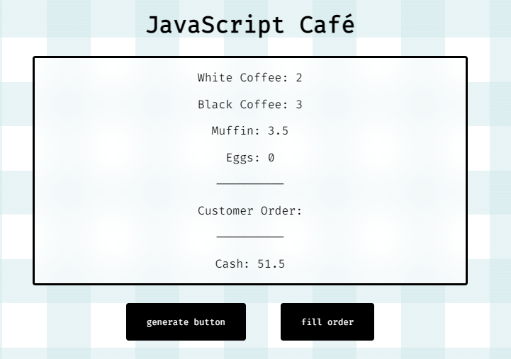
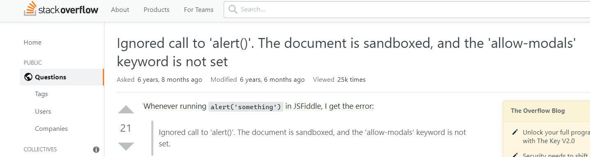
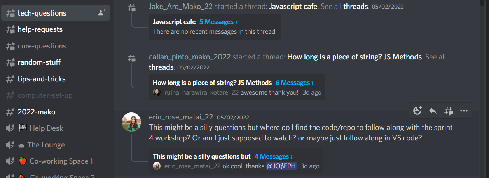
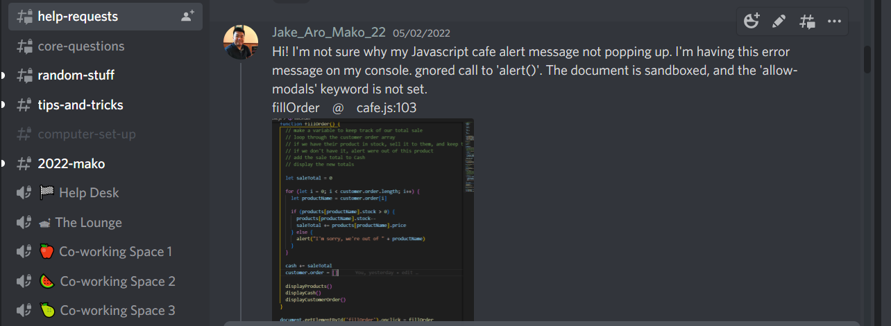

May 06, 2022
The problem was my Javascript Café was not working properly as it should. A pop-up messages should alert the owner that one of the ingredients is out of stock.
a. I checked my code if I omitted any comma, parenthesis, brackets, or spacing.
b. I tried something like not putting apostrophe into my words that the code might read as a string/value.
c. Tried to read the error message and determined which line in the code is producing the error.
d. I google what does the error message means, or if somebody had the same error message before.
e. I ask help at my cohort mates, I put a question under the #tech-questions thread.
f. When I couldn’t not get an answer under # tech-questions, I bumped my question to the #help-request thread. This is where the facilitator can help you when you’re stuck with a problem.
g. Facilitator looked at the code in question and read the error message. He advised me to just change the alert message into a console.log. It appears that my browser is at fault.
h. After the sprint, facilitator checked my Javascript Café, she tried the alert message to pop up and it did. My conclusion is that my browser is creating the error but when others try it in their browser it works perfectly.
It can be frustrating if your code doesn’t work even though you followed the video step by step. But after trying the problem-solving techniques above, I found what’s problem immediately and ended up solving the problem.
I learned that by having processes and techniques in problem solving, it helps me to solve problem quickly and efficiently.
Back to the Homepage